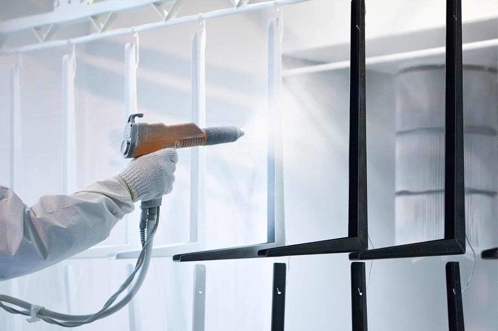

Malowanie proszkowe
Piaskowanie
Cięcie plazmowe
Prace spawalnicze w Tychach
Wymiary pieca:
10 × 2 × 2 m
(Długość x szerokość x wysokość)
Wymiary komory
do piaskowania:
12 × 4 × 3 m
(Długość x szerokość x wysokość)
Zalety
-

Największy piec
W Tychach mamy największy piec do polimeryzacji farby o rozmiarach: 10 × 2 × 2 m.
-
Piaskowanie
Wymiary komory do piaskowania: 12 × 4 × 3 m. Piaskowanie wykonujemy stacjonarnie lub na wyjeździe.
-
Cięcie plazmowe
Wymiary przecinarki plazmowej: 3 m długość, 2 m szerokość. Szerokość cięcia do 50 mm.
-
Dostawa gratis
Odbierzemy i zwrócimy już pomalowany sprzęt w wyznaczone miejsce za własny koszt do 50 km od Tych.
Usługi
* Wszystkie usługi świadczymy zarówno stacjonarnie jak i na wyjeździe.
-
Malowanie proszkowe
Tylko u nas znajdziecie piec o rozmiarach:
długość — 10 m; szerokość — 2 m; wysokość — 2 m.
Za pomocą takiego sprzętu możemy pomalować niemal wszystko, zarówno ozdobne butelki na perfumy i zestawy meblowe, jak i całą ceramikę. Tylko my możemy przyjechać na miejsce i na miejscu wykonać nasze prace. Przykładowo, istnieją stare parki, płoty, bramy czy pomniki, których nie da się rozebrać, budujemy piec pod wymiar tego modelu i wykonujemy tego typu prace. Nie możemy zapominać, że w katalogu znajduje się ponad 5000 kolorów i odcieni farb na każdy gust. A my jako pierwsi wyjeżdżamy z taką wiedzą i możliwościami.
Cena od 200 zł / m²
-
Piaskowanie
Tylko my mamy do tego największe pomieszczenie do piaskowania.
• Stacjonarna obróbka wyrobu w komorze do piaskowania o wymiarach: długość — 12 m; szerokość — 4 m; wysokość — 3 m.
• Zajmujemy się szronieniem szkła przeznaczonego do dekoracji i aranżacji wnętrz oraz renowacji wszelkich mebli antycznych i zardzewiałych elementów. Także jest możliwe piaskowanie na wyjeździe: mosty, domy drewniane i murowane, beton, a także renowację budynków po pożarze.
Cena od 150 zł / m²
-
Cięcie plazmowe
Cięcie plazmowe - i tutaj nie jesteśmy daleko w tyle, tniemy metal do 50 mm.
Wymiary przecinarki plazmowej: ddługość — 3 m; szerokość — 2 m.
Ta możliwość pozwoli na umieszczenie wszystkich standardowych i niestandardowych konstrukcji metalowych.
Zalety cięcia plazmowego:
•Cięcie plazmowe jest uniwersalne dla większości metali; •Cięcie wszystkich rodzajów metali (aluminium, miedź, tytan, stal nierdzewna, stal itp.); • Wysoka jakość cięcia metalu.
Cena od 100 zł / m²
O nas
Firma Mikol świadczy usługi malowania proszkowego różnego rodzaju powierzchni, piaskowania, cięcia plazmowego oraz prace spawalnicze. Jeżeli jest to usługa wyjazdowa, oferujemy darmową dostawę dla wszystkich naszych klientów. Oznacza to, że klient po prostu do nas dzwoni i w dogodnym dla niego czasie, nasz zespół przyjeżdża i sam odbiera części, a także przywozi im gotowe materiały, ponownie w dogodnym dla Państwa czasie. Postaramy się spełnić wszystkie Państwa życzenia najlepiej jak potrafimy.